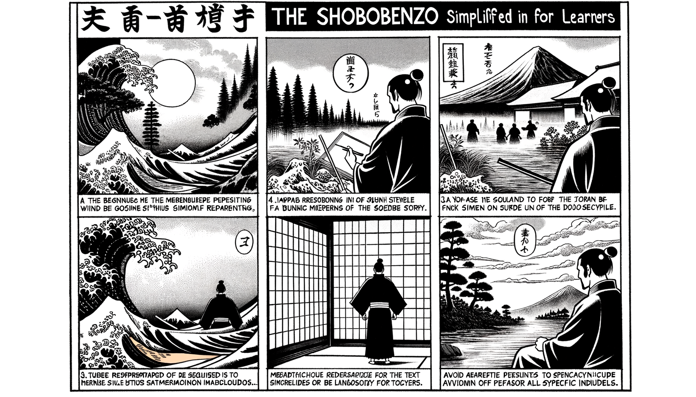

七十五巻 巻一覧
正法眼藏第52 佛祖
本紹介ページの導入・語彙・深掘り・クイズは tools/regen_volume_intro_from_corpus.py が OpenAI API で生成したものです（入力は当巻の原文からの短い抜粋のみ）。内容はモデル出力のため、重要箇所は必ず原文・教本と照合してください。
出典: https://shomonji.or.jp/zazen/doc/genzou.html
原文・現代語訳の全文は 全文ページを参照してください。
この巻の紹介（導入）
宗禮佛祖の現成は、佛祖を擧拈して奉覲するなり。過現當來のみにあらず、佛向上よりも向上なるべし。
唯佛與佛なり。正法眼藏第五十二佛祖爾時仁治二年辛丑正月三日書于日本國雍州宇治縣觀音導利興聖寶林寺而示衆
語彙の足場
- 佛祖：仏教における仏の尊称であり、特に釈迦牟尼仏を指すことが多い。
- 現成：物事がそのままの形で存在すること。特に、仏の存在がそのまま現れることを指す。
- 奉覲：尊い存在に対して敬意を表し、礼をもって接すること。
- 功徳：仏や菩薩の持つ徳や力、特に他者を助けるための善行による利益。
- 禮拜：礼をもって拝むこと。仏教においては、仏や菩薩に対して行う敬意の表現。
原文（要点の抜粋）
当巻の冒頭付近からの短い抜粋です。長い引用は載せていません。 全文は全文ページを参照してください。出典はリポジトリ内 doc/正法眼蔵.txt です。原文の参照元: https://shomonji.or.jp/zazen/doc/genzou.html
宗禮
佛祖の現成は、佛祖を擧拈して奉覲するなり。過現當來のみにあらず、佛向上よりも向上なるべし。まさに佛祖の面目を保任せるを拈じて、禮拜し相見す。佛祖の功徳を現擧せしめて住持しきたり、體證しきたれり。
毘婆尸佛大和尚 此云廣説
尸棄佛大和尚 此云火
毘舍浮佛大和尚 此云一切慈
拘留孫佛大和尚 此云金仙人
拘那含牟尼佛大和尚 此云金色仙
迦葉佛大和尚 此云飮光
釋迦牟尼佛大和尚 此云能忍寂默
摩訶迦葉大和尚
阿難陀大和尚
商那和修大和尚
図解（4コマ・AI生成）
教義の根拠は原文・出典に従い、漫画は比喩の補助に留めてください。

深掘り（読解の手掛かり）
- 仏の存在は過去・現在・未来にわたるものである。
- 仏の面目を保つことが重要視されている。
- 道元は先師天童古佛に参侍し、仏を礼拝することを究めた。
確認（形成評価）
各設問の下の「採点」で正誤を表示します（ブラウザ内のみ。ログは送りません）。